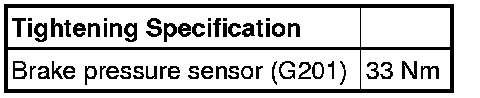

Brake Fluid Pressure Sensor/Switch: Service and Repair
Brake Pressure Sensor 1
The brake pressure sensor is located on the brake master cylinder through calendar week 48/06.
Removing
- Remove master brake cylinder. Refer to --> [ Brake Master Cylinder ] Brake Master Cylinder
- Remove brake pressure sensor 1 (G201).
Installing
- Installation is performed in the reverse order of removal.

- Bleed the brake system. Refer to --> [ Brake System Bleeding General Information ] Brake System Bleeding General Information.
After bleeding brake system, brake pressure sensor 1 (G201) basic setting must be performed.
(VAS 5051), connecting and selecting functions, refer to --> [ VAS 5051, Connecting and Selecting Functions ] Scan Tool Testing and Procedures.